Teach a frozen model a new task by learning a small, low-rank change to its weights.
Edward J. Hu, Yelong Shen, Phillip Wallis, Zeyuan Allen-Zhu, Yuanzhi Li, Shean Wang, Lu Wang, Weizhu Chen
Microsoft. ICLR 2022. Results on images from Zhang, Zhou & Liu 2022 and Zhu et al. 2024.
Presented by Ertugrul Senturk October 2026
From VPT to LoRA
VPTlast time
…
→
frozen Vision Transformer
→
head
Learned vectors join the image patches, so every image carries a longer sequence through every layer.
LoRAtoday
…
→
frozen Vision Transformersmall trained change to its weights
→
head
The input stays as it is. A small change to the weights is learned, and after training it is added into them.
VPT trained 0.6% of the weights and beat full fine-tuning on 20 of 24 tasks. But its prompts make every image slower, and they can never be folded into the model.
LoRA leaves the input alone and changes the weights instead. It ends up storing about as little per task as VPT, while the model runs exactly as fast as before.
VPT: Jia et al., ECCV 2022 (0.6% of the weights with 50 prompts per layer and a 102-class head; 20 of 24 tasks, Table 1). LoRA: Hu et al., ICLR 2022, first posted in June 2021.
Every fine-tuned copy is as big as the model
The paper starts from the largest model of its time, GPT-3, with 175 billion weights. Each fine-tuned copy takes 350 GB, so a service with a hundred tasks would store 35 TB. LoRA keeps one shared model and only a small file per task, and the frozen weights also need no optimizer state, which cuts training memory from 1.2 TB to 350 GB.
Model
343 MB
345 MB
GPT-3 in 16-bit numbers: 350 GB per copy, 35 MB per LoRA file at rank 4 on the query and value weights (Hu et al. 2022, Sec. 4.2). ViT-B/16 in 32-bit: 343 MB per copy; its LoRA file is rank 8 on the same weights plus a 102-class head. Squares are sized by area.
Earlier cheap methods cost time or sequence length
Adapters insert small extra layers into every block. They have few weights, but an image or a sentence must pass through them one after another, so serving a single input takes 20 to 30% longer. With large batches the gap shrinks to 2 or 3%.
Prompt methods such as prefix tuning and VPT lengthen the input instead. That leaves less room for the real input and costs compute in every layer, and on GPT-3 prefix tuning got worse beyond 256 prompt tokens.
LoRA adds no layer and no token at test time.
Hu et al. 2022, Table 1: one forward pass of GPT-2 medium, mean of 100 trials on one NVIDIA Quadro RTX 8000; bars are drawn relative to the fine-tuned model in each setting. Prefix tuning: Sec. 5.5 and Table 15.
What a low-rank matrix is
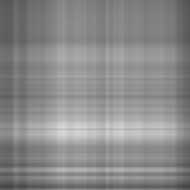
A grayscale photo is a matrix of 274 × 274 brightness values. Any matrix can be written as a sum of simple pieces, where each piece is one column of numbers times one row. The rank is the number of pieces.
LoRA bets that the change fine-tuning makes to a weight matrix is like this photo: a few pieces carry almost all of it.
Not from the paper: the best rank-r approximation (SVD) of an Oxford Pets photo, Jia et al. 2022, Fig. 10. The low-rank bet follows Li et al. 2018 and Aghajanyan et al. 2021.
LoRA adds a trainable bypass to a frozen weight
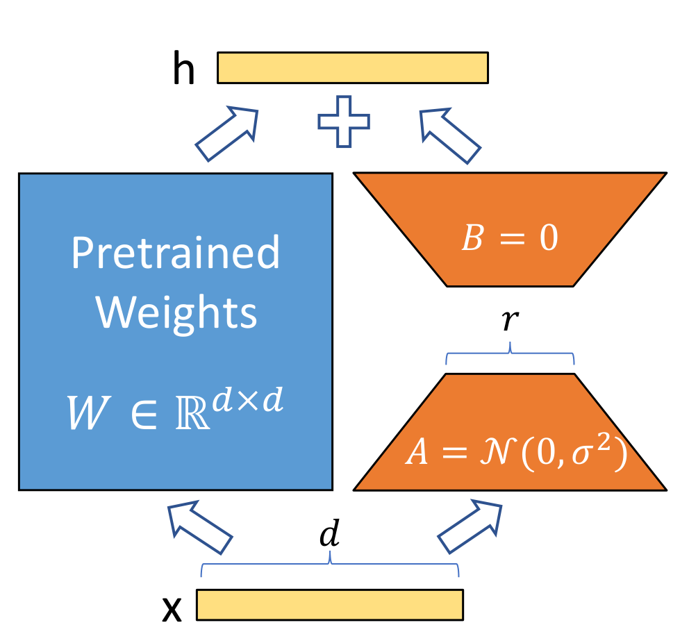
Figure: Hu et al. 2022, Fig. 1, where orange is trained. Equation (3) and Sec. 4.1. The paper sets α to the first r it tries and does not tune it.
LoRA on a 3 × 3 weight matrix
Made-up numbers with rank r = 1 and α/r = 1, so every product can be checked by eye. In ViT-B the same happens with 768 × 768 weights and r = 8.
Where LoRA goes in a Vision Transformer
One of the 12 blocks of ViT-B/16. Placement as in Hu et al. 2022, Sec. 4.2, and Houlsby et al. 2019. Zhang et al. 2022, Fig. 1a, draws LoRA, the adapter and VPT in one block.
VPT and LoRA side by side
One layer of ViT-B/16 drawn for each. VPT-deep with 50 prompts per layer (Jia et al. 2022); LoRA with rank 8 on the query and value weights (Hu et al. 2022). Both train the same 102-class head.
How much LoRA trains and stores per task
2 · N · m · d · r= 2 × 12 × 2 × 768 × 8=294,912numbers in the pairs, plus 78,438 for a 102-class head
Numbers trained and stored per task
Full fine-tuning
all 85.8 million weights, retrained for this task
343 MB100%
VPT-deep, 50 prompts
frozen and shared by every task
2.2 MB0.63%
LoRA
frozen and shared by every task
1.5 MB0.44%
Compute per image at test time
Plain ViT
197 tokens
1.00×
VPT-deep, 50 prompts
197 tokens
1.27×+50 tokens
LoRA, merged
197 tokens
1.00×nothing extra
Rank rWeights
ViT-B/16: N = 12 blocks, d = 768, m adapted weights per block, 32-bit numbers. VPT-deep as last time. Compute counts multiply-adds per layer for n tokens (12nd² + 2n²d).
LoRA's saving grows with the width of the model
Full change ΔW
d × d = d²
589,824 numbers on ViT-B
B and A together
d × r + r × d = 2rd
12,288 numbers on ViT-B
A full change to one d × d weight has d² numbers, while B and A together have 2rd. Since d is the square root of d², LoRA's cost grows like the square root of the full size, times the small constant 2r.
So the wider the model, the smaller LoRA's share. Together with adapting only the query and value weights, this is why GPT-3's task file is 10,000 times smaller than a copy.
One d × d attention weight, rank r = 8 for every model. Widths: ViT-B/16 768, ViT-L/16 1,024, ViT-H/14 1,280 (Dosovitskiy et al. 2021); GPT-3 12,288 (Hu et al. 2022, Sec. 1). 10,000 times: Hu et al. 2022, Sec. 4.2.
LoRA on a ViT in a few lines
vit = timm.create_model(BACKBONE, pretrained=True, num_classes=C)vit.requires_grad_(False); vit.head.requires_grad_(True)class LoRAqv(nn.Module): # wraps qkv = Linear(768, 2304) def __init__(self, qkv, r=8, alpha=8): super().__init__() d = qkv.in_features self.qkv, self.s = qkv, alpha / r # frozen W0, scale α/r self.Aq = nn.Parameter(torch.randn(r, d) / d ** 0.5) self.Av = nn.Parameter(torch.randn(r, d) / d ** 0.5) self.Bq = nn.Parameter(torch.zeros(d, r)) # B = 0 self.Bv = nn.Parameter(torch.zeros(d, r)) def forward(self, x): q, k, v = self.qkv(x).chunk(3, dim=-1) # W0 x q = q + self.s * x @ self.Aq.T @ self.Bq.T # + B A x v = v + self.s * x @ self.Av.T @ self.Bv.T return torch.cat([q, k, v], dim=-1)for blk in vit.blocks: blk.attn.qkv = LoRAqv(blk.attn.qkv)
B starts at zero and A at small random values, so the first forward pass is exactly the pretrained model.
The two new choices are the rank r and which weights get a pair. On ViT-B, Zhang et al. use rank 8 with AdamW at a learning rate of 0.001 for 100 epochs.
After training, each pair is added into its qkv weight once, and the model is a plain timm ViT again.
My sketch for timm's ViT-B/16: 294,912 trained numbers in the pairs, and identical outputs before and after merging. Official code: loralib, github.com/microsoft/LoRA. Settings: Hu et al. 2022, Sec. 4.1; Zhang et al. 2022, App. A.2.
Results in the paper: language models
What happens when more weights are trained
Hu et al. 2022, Table 15 (the points of Fig. 2): GPT-3 175B, validation accuracy; LoRA with equal rank on query and value, from rank 1 to 64. Full fine-tuning trains all 175 billion weights.
Which weight matrices to adapt
Hu et al. 2022, Table 5: GPT-3 175B with the same 18 million trained weights in every LoRA row, validation accuracy (noise ±0.5 on WikiSQL, ±0.1 on MNLI). Full fine-tuning: Table 4.
How small the rank can be
Hu et al. 2022, Table 6: GPT-3 175B, validation accuracy at five ranks; noise ±0.5 on WikiSQL and ±0.1 on MNLI. On GPT-2 the best rank was between 4 and 16 (App. H.2).
Why a small rank is enough
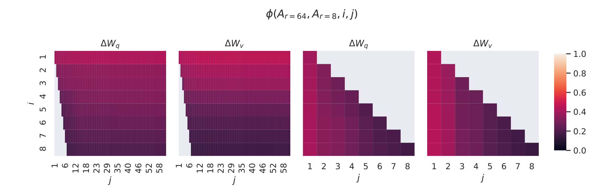
The authors trained rank 8 and rank 64 separately and compared the directions each learned. Bright means the two runs found the same direction. Only the first direction is clearly shared, with similarity above 0.5, and the rest overlap little, so most of the extra rank holds noise.
21.67
is how strongly the pretrained weight Wq acts along its own top 4 directions.
0.32
is how strongly it acts along the 4 directions of the learned change ΔWq: weak, but more than the 0.02 of random directions.
6.91
is the strength of the change along those directions, about 21 times what the pretrained weight had there.
The change does not repeat what the model already does. It strongly amplifies directions the model learned in pretraining but used weakly.
Hu et al. 2022, Fig. 3 (layer 48 of 96, GPT-3; values are normalized subspace similarity, 0 to 1) and Table 7 (rank 4, Frobenius norms).
LoRA on images
The paper itself has no image experiments. Vision groups tested it next, first on the same 19 VTAB-1k tasks as VPT, then on medical images.
Both use a ViT-B/16, so the numbers sit next to last time's.
Natural
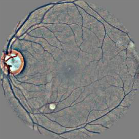
Specialized
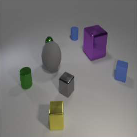
Structured
LoRA, VPT and adapters on the same ViT
Zhang et al. 2022, Table 1: ViT-B/16 pretrained on ImageNet-21k, VTAB-1k test accuracy. LoRA (rank 8) and the adapter were trained by Zhang et al.; the other rows are Jia et al. 2022, Table 1. Group means computed from the per-task values; "all 19" is the mean of the three groups.
Neither LoRA nor VPT wins every task
LoRA is ahead on 15 of the 19 tasks, by up to 14 points on counting objects in CLEVR. VPT-deep is ahead on 4, and on CIFAR-100 by 12 points.
Zhang et al. conclude that no single method fits every task. Their method, NOAH, searches for a mix of LoRA, adapter and prompts per task, and reaches 75.5 on average.
Zhang et al. 2022, Table 1: per-task test accuracy of LoRA minus VPT-deep on VTAB-1k, ViT-B/16. Right of the line, LoRA is ahead.
LoRA on medical images
Where LoRA falls short
The rank and the weights are chosen by hand
The paper picks the query and value weights and a small rank by trying settings, and leaves a principled choice to future work. On VTAB-1k the best method even changes from task to task.
Merged weights serve one task at a time
Once BA is added into W, every input in a batch must belong to that task. Mixing tasks in one batch means keeping the pairs separate, which brings back a small extra cost; VPT's prompts mix freely.
A small rank assumes a nearby task
The authors expect a small rank to fail when the new task is far from pretraining, such as a different language. The low-rank analysis was only done on GPT-3, not on vision models.
Training still runs through the whole model
LoRA saves the optimizer state of the frozen weights, but the gradient still passes back through every layer. On ViT-B most memory is activations: freezing the backbone for VPT only cut it from 11.7 to 10.3 GB.
Hu et al. 2022, Sec. 4.2 (batching), footnote 6 (a different language), Sec. 7 and 8 (analysis on GPT-3, future work). Zhang et al. 2022, Fig. 1b. Jia et al. 2022, Table 12 (ViT-B/16, batch 64).
My experiments
I trained LoRA on the same three medical datasets as my VPT runs, with the same base model, data and training recipe.
So it sits next to VPT-deep, a linear probe and full fine-tuning. First the results, then the models running live.
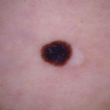
Skin lesions
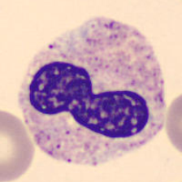
Blood cells
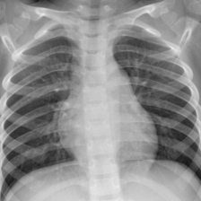
Chest X-rays
I tested LoRA on the same three medical datasets
Each method was trained twice: on 1,000 images, as in VTAB-1k, and on the full training set.
melanoma
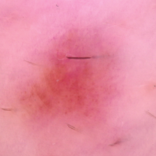
nevus
Skin lesions
Dermoscopy, 7 classes
1,000 or all 7,007 training images
neutrophil
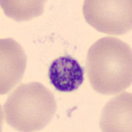
platelet
Blood cells
Microscopy, 8 cell types
1,000 or all 11,959 training images
normal
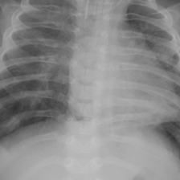
pneumonia
Chest X-rays
Radiographs, pneumonia or normal
1,000 or all 4,708 training images
head
ViT-B/16 frozen
Linear probe
Trains only a new head.
head
ViT-B/16 frozen
VPT-deep
Trains a head and 50 prompts per layer.
head
ViT-B/16 frozen
+
LoRA
Trains a head and rank-8 pairs beside Wq and Wv.
head
ViT-B/16 retrained
Full fine-tuning
Retrains all 85.8 million weights.
MedMNIST+ at 224 × 224 (Yang et al. 2023); skin lesions from HAM10000 (Tschandl et al. 2018). RTX 5070 Ti laptop GPU. SGD for linear probe and VPT, AdamW for LoRA and full fine-tuning; learning rate picked on validation.
How LoRA compares on my three datasets
My runs: ViT-B/16 (ImageNet-21k), MedMNIST+ 224 × 224, balanced accuracy on the test set (the mean per-class recall), bars start at 0. Each method was trained once with 1,000 images and once with the full training set; there are no points in between.
What each method costs on skin lesions
Live demo: one image, three models
Pick a test image below, or drop your own here
Linear probe
shared frozen model + head
LoRA
shared frozen model + pairs
Full fine-tuning
its own retrained model
All three start from the same ViT-B/16, pretrained on ImageNet-21k. Linear probe and LoRA share one frozen copy of it; full fine-tuning runs its own retrained copy.
Not connectedResearch demo, not a diagnostic tool
Summary
0.44%
of ViT-B's weights are trained with rank 8 on the query and value weights and a head: a 1.5 MB file per task.
1.00×
the test-time cost of the original model, because the learned change is added into the weights after training.
74.6
mean VTAB-1k accuracy on ViT-B/16, against 72.0 for VPT-deep and 69.0 for full fine-tuning.
r = 1
was already enough on GPT-3 for the query and value weights: the change fine-tuning needs is low-rank.
–
average balanced accuracy of LoRA on my three medical datasets.
ViT-B/16 with a 102-class head, 32-bit numbers. Zhang et al. 2022, Table 1, mean of the three VTAB-1k groups; VPT-deep and full fine-tuning from Jia et al. 2022. Hu et al. 2022, Table 6. Medical datasets: my runs, balanced accuracy on the test set.
References
This paper
Hu, Shen, Wallis, Allen-Zhu, Li, Wang, Wang & Chen 2022.LoRA: low-rank adaptation of large language models. ICLR. arXiv:2106.09685.
LoRA on images
Zhang, Zhou & Liu 2022.Neural prompt search (NOAH). arXiv:2206.04673.
Zhu et al. 2024.MeLo: low-rank adaptation is better than fine-tuning for medical image diagnosis. ISBI. arXiv:2311.08236.
Ideas LoRA builds on
Li, Farkhoor, Liu & Yosinski 2018.Measuring the intrinsic dimension of objective landscapes. ICLR.
Aghajanyan, Zettlemoyer & Gupta 2021.Intrinsic dimensionality explains the effectiveness of language model fine-tuning. ACL.
Methods compared
Houlsby et al. 2019.Parameter-efficient transfer learning for NLP (adapter). ICML.
Lin, Madotto & Fung 2020.Exploring versatile generative language model via parameter-efficient transfer learning. Findings of EMNLP.
Rücklé et al. 2021.AdapterDrop: on the efficiency of adapters in Transformers. EMNLP.
Li & Liang 2021.Prefix-tuning: optimizing continuous prompts for generation. ACL.
Ben Zaken, Goldberg & Ravfogel 2022.BitFit. ACL.
Jia et al. 2022.Visual prompt tuning. ECCV.
Models
Dosovitskiy et al. 2021.An image is worth 16×16 words: Transformers for image recognition at scale (ViT). ICLR.
Brown et al. 2020.Language models are few-shot learners (GPT-3). NeurIPS.
Radford et al. 2019.Language models are unsupervised multitask learners (GPT-2). OpenAI report.
Liu et al. 2019.RoBERTa: a robustly optimized BERT pretraining approach. arXiv:1907.11692.
Radford et al. 2021.Learning transferable visual models from natural language supervision (CLIP). ICML.
Datasets
Zhai et al. 2019.A large-scale study of representation learning with the visual task adaptation benchmark (VTAB). arXiv:1910.04867.